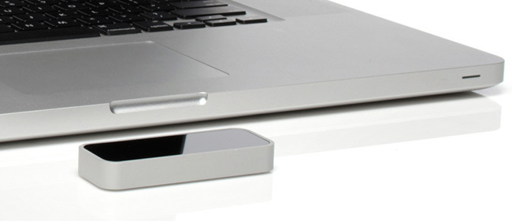

Leap Motion, el sistema de control gestual más barato y preciso que Kinect
Cuando algo es demasiado bueno para ser verdad normalmente es porque no lo es. LEAP es un diminuto dispositivo de control gestual que colocado frente a la pantalla de nuestro ordenador es capaz de capturar con una precisión enorme los movimientos de nuestras manos, dedos e incluso objetos. Es como un Kinect con vitaminas con el que no solo podemos jugar a nuestro shooter en primera persona preferido apuntando con el brazo y disparando con la mano imitando una pistola, sino que hasta es posible escribir en el aire para detectar cada matiz de nuestra caligrafía.
Su propuesta no es ni más ni menos que la de reemplazar al teclado y el ratón (o el trackpad) haciéndolos obsoletos a golpe de gesto. Navegar por una web, dibujar, movernos por mapas o fotos al más puro estilo Minority Report o disfrutar de toda clase de videojuegos. Leap Motion, la startup de San Francisco que está detrás del invento, asegura que es 200 veces más preciso que cualquier otro sistema disponible en el mercado (ejem, creo que lo dicen por Microsoft) y lo mejor es que su precio es de tan sólo 70 dólares.
¿Dónde está la trampa entonces? ¿Su configuración? Al parecer también es muy sencillo de utilizar: tan solo hay que conectarlo vía USB y listo, no requiere de ningún tipo de calibrado o configuración. ¿Compatibilidad? Soporta Mac OS X y Windows 7/8 y pronto pondrán a disposición de los desarrolladores las librerías necesarias para que lo integren en sus aplicaciones así que no, aquí tampoco parece haber ningún problema.

LEAP y el efecto brazo de gorila
Que su salida al mercado no vaya a producirse hasta principios de 2013 pese a poder encargarse ya de forma anticipada no nos da buena espina, pero parece la gente de Cnet ha podido verlo en funcionamiento con sus propios ojos y parece ser exactamente lo que dice ser. Así que, por última vez, ¿dónde está la pega? Ya os la he dicho, en lo que dice ser.
Utilizando palabras de Steve Jobs durante la presentación del MacBook Air en 2010, “Hemos realizado toneladas de pruebas de usuario con esto [un Mac táctil] y resulta que no funciona. Las superficies táctiles no quieren ser verticales. Quedan genial durante una demostración, pero tras un pequeño período de tiempo empiezas a sentirte fatigado y tras un rato más tu brazo quiere que lo bajes.” Este argumento es igualmente válido para este tipo de interfaces gestuales: parecen fantásticas en los vídeos, pero cuando te pones a navegar por Internet en la vida real, lo último que quieres es tener un brazo alzado durante dos horas.
LEAP me aprece una idea genial, y me encantaría verlo integrado de algún modo en los futuros Macs para ejecutar tareas simples y muy específicas pero no, no va a reemplazar al teclado, el ratón o los trackpads porque es una idea terrible cuando se aplica a períodos prolongados de tiempo. Es lo que los diseñadores de interacción denominamos efecto brazo de gorila en alusión a la sensación que produce tras un rato haciendo que tus brazos te parezcan enormes y pesados. En resumen, ¿sustituir? nunca, no es una cuestión de tecnología sino anatómica; ahora bien, ¿acompañar? ¡Bienvenido sea!
Fuente: http://www.applesfera.com/accesorios/leap-motion-el-sistema-de-control-gestual-mas-barato-y-preciso-que-kinect-que-dificilmente-triunfara
Página de LEAP MOTION: https://www.leapmotion.com/
Atrás